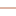

<!doctype html>
<html lang="en">
    <head>
        <meta charset="utf-8">
        <meta http-equiv="X-UA-Compatible" content="IE=edge">
        <meta name="viewport" content="initial-scale=1,user-scalable=no,maximum-scale=1,width=device-width">
        <meta name="mobile-web-app-capable" content="yes">
        <meta name="apple-mobile-web-app-capable" content="yes">
        <link rel="stylesheet" href="css/leaflet.css">
        <link rel="stylesheet" href="css/L.Control.Layers.Tree.css">
        <link rel="stylesheet" href="css/L.Control.Locate.min.css">
        <link rel="stylesheet" href="css/qgis2web.css">
        <link rel="stylesheet" href="css/fontawesome-all.min.css">
        <link rel="stylesheet" href="css/leaflet-control-geocoder.Geocoder.css">
        <style>
        html, body, #map {
            width: 100%;
            height: 100%;
            padding: 0;
            margin: 0;
        }
        </style>
        <title>WebGIS Fasilitas Kesehatan Kecamatan Indramayu</title>
    </head>
    <body>
        <div id="map">
        </div>
        <script src="js/qgis2web_expressions.js"></script>
        <script src="js/leaflet.js"></script>
        <script src="js/L.Control.Layers.Tree.min.js"></script>
        <script src="js/L.Control.Locate.min.js"></script>
        <script src="js/leaflet.rotatedMarker.js"></script>
        <script src="js/leaflet.pattern.js"></script>
        <script src="js/leaflet-hash.js"></script>
        <script src="js/Autolinker.min.js"></script>
        <script src="js/rbush.min.js"></script>
        <script src="js/labelgun.min.js"></script>
        <script src="js/labels.js"></script>
        <script src="js/leaflet-control-geocoder.Geocoder.js"></script>
        <script src="data/KecamatanIndramayu_1.js"></script>
        <script src="data/ServiceArea_2.js"></script>
        <script src="data/JaringanJalan_3.js"></script>
        <script src="data/FasilitasKesehatan_4.js"></script>
        <script>
        var map = L.map('map', {
            zoomControl:false, maxZoom:28, minZoom:1
        })
        var hash = new L.Hash(map);
        map.attributionControl.setPrefix('<a href="https://github.com/tomchadwin/qgis2web" target="_blank">qgis2web</a> &middot; <a href="https://leafletjs.com" title="A JS library for interactive maps">Leaflet</a> &middot; <a href="https://qgis.org">QGIS</a>');
        var autolinker = new Autolinker({truncate: {length: 30, location: 'smart'}});
        // remove popup's row if "visible-with-data"
        function removeEmptyRowsFromPopupContent(content, feature) {
         var tempDiv = document.createElement('div');
         tempDiv.innerHTML = content;
         var rows = tempDiv.querySelectorAll('tr');
         for (var i = 0; i < rows.length; i++) {
             var td = rows[i].querySelector('td.visible-with-data');
             var key = td ? td.id : '';
             if (td && td.classList.contains('visible-with-data') && feature.properties[key] == null) {
                 rows[i].parentNode.removeChild(rows[i]);
             }
         }
         return tempDiv.innerHTML;
        }
        // add class to format popup if it contains media
		function addClassToPopupIfMedia(content, popup) {
			var tempDiv = document.createElement('div');
			tempDiv.innerHTML = content;
			if (tempDiv.querySelector('td img')) {
				popup._contentNode.classList.add('media');
					// Delay to force the redraw
					setTimeout(function() {
						popup.update();
					}, 10);
			} else {
				popup._contentNode.classList.remove('media');
			}
		}
        var zoomControl = L.control.zoom({
            position: 'topleft'
        }).addTo(map);
        L.control.locate({locateOptions: {maxZoom: 19}}).addTo(map);
        var bounds_group = new L.featureGroup([]);
        function setBounds() {
            if (bounds_group.getLayers().length) {
                map.fitBounds(bounds_group.getBounds());
            }
        }
        map.createPane('pane_GoogleSatellite_0');
        map.getPane('pane_GoogleSatellite_0').style.zIndex = 400;
        var layer_GoogleSatellite_0 = L.tileLayer('https://mt1.google.com/vt/lyrs=s&x={x}&y={y}&z={z}', {
            pane: 'pane_GoogleSatellite_0',
            opacity: 1.0,
            attribution: '<a href="https://www.google.at/permissions/geoguidelines/attr-guide.html">Map data ©2015 Google</a>',
            minZoom: 1,
            maxZoom: 28,
            minNativeZoom: 0,
            maxNativeZoom: 20
        });
        layer_GoogleSatellite_0;
        map.addLayer(layer_GoogleSatellite_0);
        function pop_KecamatanIndramayu_1(feature, layer) {
            var popupContent = '<table>\
                    <tr>\
                        <th scope="row">WADMKC</th>\
                        <td class="visible-with-data" id="WADMKC">' + (feature.properties['WADMKC'] !== null ? autolinker.link(feature.properties['WADMKC'].toLocaleString()) : '') + '</td>\
                    </tr>\
                </table>';
            var content = removeEmptyRowsFromPopupContent(popupContent, feature);
			layer.on('popupopen', function(e) {
				addClassToPopupIfMedia(content, e.popup);
			});
			layer.bindPopup(content, { maxHeight: 400 });
        }

        function style_KecamatanIndramayu_1_0() {
            return {
                pane: 'pane_KecamatanIndramayu_1',
                opacity: 1,
                color: 'rgba(35,35,35,1.0)',
                dashArray: '',
                lineCap: 'butt',
                lineJoin: 'miter',
                weight: 1.0, 
                fill: true,
                fillOpacity: 1,
                fillColor: 'rgba(190,178,151,1.0)',
                interactive: true,
            }
        }
        map.createPane('pane_KecamatanIndramayu_1');
        map.getPane('pane_KecamatanIndramayu_1').style.zIndex = 401;
        map.getPane('pane_KecamatanIndramayu_1').style['mix-blend-mode'] = 'normal';
        var layer_KecamatanIndramayu_1 = new L.geoJson(json_KecamatanIndramayu_1, {
            attribution: '',
            interactive: true,
            dataVar: 'json_KecamatanIndramayu_1',
            layerName: 'layer_KecamatanIndramayu_1',
            pane: 'pane_KecamatanIndramayu_1',
            onEachFeature: pop_KecamatanIndramayu_1,
            style: style_KecamatanIndramayu_1_0,
        });
        bounds_group.addLayer(layer_KecamatanIndramayu_1);
        map.addLayer(layer_KecamatanIndramayu_1);
        function pop_ServiceArea_2(feature, layer) {
            var popupContent = '<table>\
                    <tr>\
                        <td class="visible-with-data" id="Jangkauan"colspan="2"><strong>Jangkauan</strong><br />' + (feature.properties['Jangkauan'] !== null ? autolinker.link(feature.properties['Jangkauan'].toLocaleString()) : '') + '</td>\
                    </tr>\
                </table>';
            var content = removeEmptyRowsFromPopupContent(popupContent, feature);
			layer.on('popupopen', function(e) {
				addClassToPopupIfMedia(content, e.popup);
			});
			layer.bindPopup(content, { maxHeight: 400 });
        }

        function style_ServiceArea_2_0(feature) {
            switch(String(feature.properties['Jangkauan'])) {
                case '1000 meter':
                    return {
                pane: 'pane_ServiceArea_2',
                opacity: 1,
                color: 'rgba(35,35,35,1.0)',
                dashArray: '',
                lineCap: 'butt',
                lineJoin: 'miter',
                weight: 1.0, 
                fill: true,
                fillOpacity: 1,
                fillColor: 'rgba(251,154,153,1.0)',
                interactive: true,
            }
                    break;
                case '3000 meter':
                    return {
                pane: 'pane_ServiceArea_2',
                opacity: 1,
                color: 'rgba(35,35,35,1.0)',
                dashArray: '',
                lineCap: 'butt',
                lineJoin: 'miter',
                weight: 1.0, 
                fill: true,
                fillOpacity: 1,
                fillColor: 'rgba(178,223,138,1.0)',
                interactive: true,
            }
                    break;
            }
        }
        map.createPane('pane_ServiceArea_2');
        map.getPane('pane_ServiceArea_2').style.zIndex = 402;
        map.getPane('pane_ServiceArea_2').style['mix-blend-mode'] = 'normal';
        var layer_ServiceArea_2 = new L.geoJson(json_ServiceArea_2, {
            attribution: '',
            interactive: true,
            dataVar: 'json_ServiceArea_2',
            layerName: 'layer_ServiceArea_2',
            pane: 'pane_ServiceArea_2',
            onEachFeature: pop_ServiceArea_2,
            style: style_ServiceArea_2_0,
        });
        bounds_group.addLayer(layer_ServiceArea_2);
        map.addLayer(layer_ServiceArea_2);
        function pop_JaringanJalan_3(feature, layer) {
            var popupContent = '<table>\
                    <tr>\
                        <th scope="row">REMARK</th>\
                        <td class="visible-with-data" id="REMARK">' + (feature.properties['REMARK'] !== null ? autolinker.link(feature.properties['REMARK'].toLocaleString()) : '') + '</td>\
                    </tr>\
                </table>';
            var content = removeEmptyRowsFromPopupContent(popupContent, feature);
			layer.on('popupopen', function(e) {
				addClassToPopupIfMedia(content, e.popup);
			});
			layer.bindPopup(content, { maxHeight: 400 });
        }

        function style_JaringanJalan_3_0(feature) {
            switch(String(feature.properties['REMARK'])) {
                case 'Jalan Lain':
                    return {
                pane: 'pane_JaringanJalan_3',
                opacity: 1,
                color: 'rgba(86,160,68,1.0)',
                dashArray: '',
                lineCap: 'square',
                lineJoin: 'bevel',
                weight: 1.0,
                fillOpacity: 0,
                interactive: true,
            }
                    break;
                case 'Jalan Lokal':
                    return {
                pane: 'pane_JaringanJalan_3',
                opacity: 1,
                color: 'rgba(197,87,227,1.0)',
                dashArray: '',
                lineCap: 'square',
                lineJoin: 'bevel',
                weight: 1.0,
                fillOpacity: 0,
                interactive: true,
            }
                    break;
                case 'Jalan Setapak':
                    return {
                pane: 'pane_JaringanJalan_3',
                opacity: 1,
                color: 'rgba(187,105,73,1.0)',
                dashArray: '',
                lineCap: 'square',
                lineJoin: 'bevel',
                weight: 1.0,
                fillOpacity: 0,
                interactive: true,
            }
                    break;
            }
        }
        map.createPane('pane_JaringanJalan_3');
        map.getPane('pane_JaringanJalan_3').style.zIndex = 403;
        map.getPane('pane_JaringanJalan_3').style['mix-blend-mode'] = 'normal';
        var layer_JaringanJalan_3 = new L.geoJson(json_JaringanJalan_3, {
            attribution: '',
            interactive: true,
            dataVar: 'json_JaringanJalan_3',
            layerName: 'layer_JaringanJalan_3',
            pane: 'pane_JaringanJalan_3',
            onEachFeature: pop_JaringanJalan_3,
            style: style_JaringanJalan_3_0,
        });
        bounds_group.addLayer(layer_JaringanJalan_3);
        map.addLayer(layer_JaringanJalan_3);
        function pop_FasilitasKesehatan_4(feature, layer) {
            var popupContent = '<table>\
                    <tr>\
                        <td class="visible-with-data" id="Name"colspan="2"><strong>Name</strong><br />' + (feature.properties['Name'] !== null ? autolinker.link(feature.properties['Name'].toLocaleString()) : '') + '</td>\
                    </tr>\
                    <tr>\
                        <td class="visible-with-data" id="Foto"colspan="2"><strong>Foto</strong><br />' + (feature.properties['Foto'] !== null ? '' : '') + '</td>\
                    </tr>\
                </table>';
            var content = removeEmptyRowsFromPopupContent(popupContent, feature);
			layer.on('popupopen', function(e) {
				addClassToPopupIfMedia(content, e.popup);
			});
			layer.bindPopup(content, { maxHeight: 400 });
        }

        function style_FasilitasKesehatan_4_0(feature) {
            switch(String(feature.properties['Name'])) {
                case 'RS Pertamina Balongan':
                    return {
                pane: 'pane_FasilitasKesehatan_4',
                radius: 4.0,
                opacity: 1,
                color: 'rgba(35,35,35,1.0)',
                dashArray: '',
                lineCap: 'butt',
                lineJoin: 'miter',
                weight: 1,
                fill: true,
                fillOpacity: 1,
                fillColor: 'rgba(99,217,174,1.0)',
                interactive: true,
            }
                    break;
                case 'Rumah Sakit MM':
                    return {
                pane: 'pane_FasilitasKesehatan_4',
                radius: 4.0,
                opacity: 1,
                color: 'rgba(35,35,35,1.0)',
                dashArray: '',
                lineCap: 'butt',
                lineJoin: 'miter',
                weight: 1,
                fill: true,
                fillOpacity: 1,
                fillColor: 'rgba(176,82,234,1.0)',
                interactive: true,
            }
                    break;
            }
        }
        map.createPane('pane_FasilitasKesehatan_4');
        map.getPane('pane_FasilitasKesehatan_4').style.zIndex = 404;
        map.getPane('pane_FasilitasKesehatan_4').style['mix-blend-mode'] = 'normal';
        var layer_FasilitasKesehatan_4 = new L.geoJson(json_FasilitasKesehatan_4, {
            attribution: '',
            interactive: true,
            dataVar: 'json_FasilitasKesehatan_4',
            layerName: 'layer_FasilitasKesehatan_4',
            pane: 'pane_FasilitasKesehatan_4',
            onEachFeature: pop_FasilitasKesehatan_4,
            pointToLayer: function (feature, latlng) {
                var context = {
                    feature: feature,
                    variables: {}
                };
                return L.circleMarker(latlng, style_FasilitasKesehatan_4_0(feature));
            },
        });
        bounds_group.addLayer(layer_FasilitasKesehatan_4);
        map.addLayer(layer_FasilitasKesehatan_4);
        var osmGeocoder = new L.Control.Geocoder({
            collapsed: true,
            position: 'topleft',
            text: 'Search',
            title: 'Testing'
        }).addTo(map);
        document.getElementsByClassName('leaflet-control-geocoder-icon')[0]
        .className += ' fa fa-search';
        document.getElementsByClassName('leaflet-control-geocoder-icon')[0]
        .title += 'Search for a place';
        var baseMaps = {};
        var overlaysTree = [
            {label: 'Fasilitas Kesehatan<br /><table><tr><td style="text-align: center;"></td><td>RS Pertamina Balongan</td></tr><tr><td style="text-align: center;"></td><td>Rumah Sakit MM</td></tr></table>', layer: layer_FasilitasKesehatan_4},
            {label: 'Jaringan Jalan<br /><table><tr><td style="text-align: center;"></td><td>Jalan Lain</td></tr><tr><td style="text-align: center;"></td><td>Jalan Lokal</td></tr><tr><td style="text-align: center;"></td><td>Jalan Setapak</td></tr></table>', layer: layer_JaringanJalan_3},
            {label: 'Service Area<br /><table><tr><td style="text-align: center;"></td><td>1000 meter</td></tr><tr><td style="text-align: center;"></td><td>3000 meter</td></tr></table>', layer: layer_ServiceArea_2},
            {label: ' Kecamatan Indramayu', layer: layer_KecamatanIndramayu_1},
            {label: "Google Satellite", layer: layer_GoogleSatellite_0},]
        var lay = L.control.layers.tree(null, overlaysTree,{
            //namedToggle: true,
            //selectorBack: false,
            //closedSymbol: '&#8862; &#x1f5c0;',
            //openedSymbol: '&#8863; &#x1f5c1;',
            //collapseAll: 'Collapse all',
            //expandAll: 'Expand all',
            collapsed: false, 
        });
        lay.addTo(map);
        setBounds();
        </script>
    </body>
</html>
